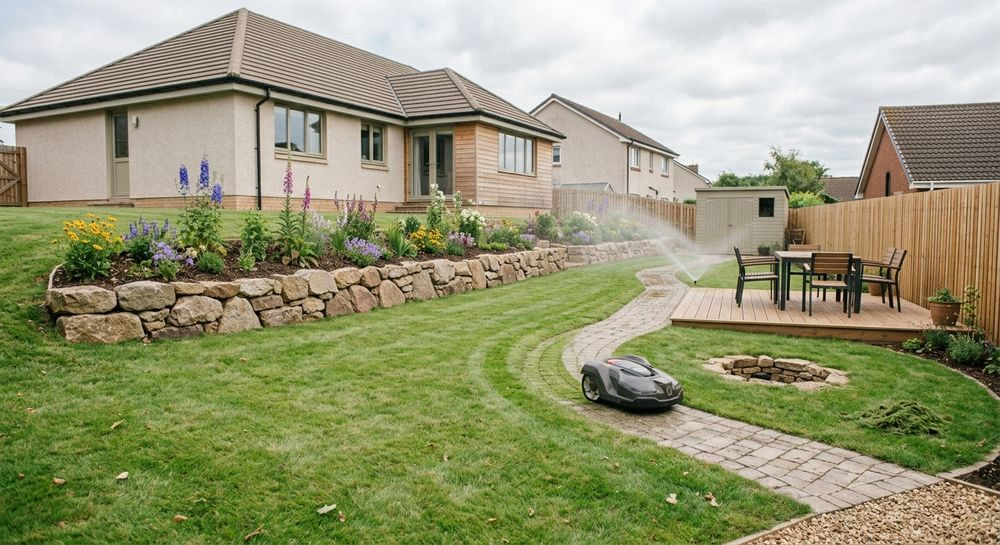

Prestations
Ce que nous aménageons chez vous
Terrasses, allées, murets, jardins et entretien : les prestations se composent selon votre terrain et vos usages.


Sols extérieurs
Terrasses, dallages et allées
Un sol bien préparé et bien posé fait la durée d'un aménagement. Le revêtement se choisit selon l'usage et le style de la maison.
- Terrasses en bois
- Dallages et allées
- Cheminements entre la maison et le jardin

Maçonnerie paysagère
Murets, marches et soutènements en pierre
La pierre structure le jardin : elle retient la terre, dessine les niveaux et donne du caractère à l'ensemble.
- Murets de jardin
- Marches et escaliers extérieurs
- Jardinières et bordures maçonnées

Côté végétal
Création de jardins et plantations
Massifs, pelouses et bordures sont dessinés ensemble, puis plantés avec des végétaux adaptés à votre terrain.
- Création de massifs et de pelouses
- Plantation d'arbustes et de végétaux
- Bordures et finitions


Au fil des saisons
Entretien du jardin
Un jardin aménagé reste beau s'il est suivi. Tonte, taille et soins se planifient selon vos besoins.
- Taille des haies
- Tonte des pelouses
- Entretien courant des massifs
Un devis ?
Terrasse, allée ou jardin : décrivez-nous votre idée
Quelques mots suffisent pour démarrer la discussion.